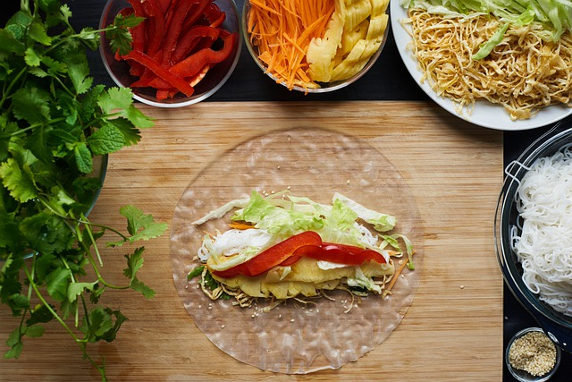

Spring-rolls recipe

Easy to make spring rolls
Spring-rolls are a fantastic meal choice if you do not really want to cook. You can just chop some vegetables and maybe make some meat or tofu of your choice.
Then assamble everthing and add a sauce of your choice. Peanutbutter sauce or aioli tastes really good with spring-rolls.
Ingredients
- Rice paper sheets
- Cucumber
- 2 Carrots
- Mung sprouts or any other sprouts to your liking
- Peanut sauce or aioli
- Shrimps
- Bell pepper
- Optional: rice noodles
Instructions
- Start by cutting your vegetables into fine sticks. Cook the shrimps with a little bit olive oil and add salt and pepper to taste.
- Put everthing into bowls
- The store bought rice paper sheets will be dry and brittle. To get them soft just soak them in a little bit water until everthing is wet and put them onto your plate.
Add your vegetables, shrimps and sauce (or dip them later in the sauce).
- Fold in the top and bottom part of your rice paper sheet and then roll them tightly
- Enjoy!